Total Probability and Bayes' FormulaCông thức xác suất toàn phần và công thức Bayes
Grade 12 · Topic: Conditional ProbabilityLớp 12 · Chủ đề: Xác suất có điều kiện
1Lesson IntroductionGiới thiệu bài học
Learning goalsMục tiêu bài học
By the end of this lesson you can:
Sau bài học này, em có thể:
recognise the law of total probability and Bayes' formula;
nhận biết công thức xác suất toàn phần và công thức Bayes;
identify a complete system of events and the given conditional probabilities;
xác định hệ biến cố đầy đủ và các xác suất có điều kiện đã cho;
compute \(P(A)\) and the "reverse" probability \(P(B\mid A)\), using a tree diagram;
tính \(P(A)\) và xác suất "ngược" \(P(B\mid A)\), dùng sơ đồ hình cây;
solve problems on quality control, medical tests and classification.
giải bài toán kiểm tra chất lượng sản phẩm, xét nghiệm y tế, phân loại.
2Mathematical VocabularyTừ vựng Toán học
law of total probability – \(P(A)=P(B)P(A\mid B)+P(\overline B)P(A\mid\overline B)\); more generally \(P(A)=\sum P(B_i)P(A\mid B_i)\).
công thức xác suất toàn phần – \(P(A)=P(B)P(A\mid B)+P(\overline B)P(A\mid\overline B)\); tổng quát \(P(A)=\sum P(B_i)P(A\mid B_i)\).
Bayes' formula – \(P(B\mid A)=\dfrac{P(B)P(A\mid B)}{P(A)}\): it reverses a conditional probability.
công thức Bayes – \(P(B\mid A)=\dfrac{P(B)P(A\mid B)}{P(A)}\): đảo chiều một xác suất có điều kiện.
complete system of events – events \(B_1,\dots,B_n\), pairwise exclusive, with union \(\Omega\) and positive probabilities.
hệ biến cố đầy đủ – các biến cố \(B_1,\dots,B_n\) đôi một xung khắc, hợp bằng \(\Omega\), có xác suất dương.
tree diagram – a diagram whose branches carry probabilities; multiply along a branch, add the branches.
sơ đồ hình cây – sơ đồ mà mỗi nhánh ghi xác suất; nhân dọc theo nhánh, cộng các nhánh.
3Useful English PhrasesCụm từ tiếng Anh thường gặp
Multiply along each branch, then add.
Nhân theo từng nhánh rồi cộng lại.
The product came from machine one.
Sản phẩm do máy I sản xuất.
Given that the test is positive.
Biết rằng kết quả xét nghiệm dương tính.
Bayes' formula reverses the condition.
Công thức Bayes đảo chiều điều kiện.
The prior probability is updated.
Xác suất ban đầu được cập nhật.
4Prerequisite ReviewÔn tập kiến thức nền
From Lesson 18: \(P(A\mid B)=\dfrac{P(A\cap B)}{P(B)}\); multiplication rule \(P(A\cap B)=P(B)P(A\mid B)\); \(P(\overline B)=1-P(B)\).
Từ Bài 18: \(P(A\mid B)=\dfrac{P(A\cap B)}{P(B)}\); công thức nhân \(P(A\cap B)=P(B)P(A\mid B)\); \(P(\overline B)=1-P(B)\).
5TheoryLý thuyết
5.1 The law of total probabilityCông thức xác suất toàn phần
FormulaCông thức
For events \(A\), \(B\) with \(0\lt P(B)\lt1\): \[P(A)=P(B)\,P(A\mid B)+P(\overline B)\,P(A\mid\overline B).\] Reason: \(A=(A\cap B)\cup(A\cap\overline B)\), two exclusive events; apply the multiplication rule to each. More generally, for a complete system \(B_1,\dots,B_n\): \(P(A)=\sum_{i=1}^{n}P(B_i)P(A\mid B_i)\).
Cho hai biến cố \(A\), \(B\) với \(0\lt P(B)\lt1\): \[P(A)=P(B)\,P(A\mid B)+P(\overline B)\,P(A\mid\overline B).\] Lí do: \(A=(A\cap B)\cup(A\cap\overline B)\) là hợp của hai biến cố xung khắc; áp dụng công thức nhân cho mỗi biến cố. Tổng quát, với hệ biến cố đầy đủ \(B_1,\dots,B_n\): \(P(A)=\sum_{i=1}^{n}P(B_i)P(A\mid B_i)\).
| BranchNhánh | First levelTầng 1 | Second levelTầng 2 | ProductTích |
|---|---|---|---|
| \(B\) then \(A\)\(B\) rồi \(A\) | \(P(B)\) | \(P(A\mid B)\) | \(P(A\cap B)\) |
| \(\overline B\) then \(A\)\(\overline B\) rồi \(A\) | \(P(\overline B)\) | \(P(A\mid\overline B)\) | \(P(A\cap\overline B)\) |
| TotalCộng | \(P(A)\) |
Tree diagram in a table: multiply along each branch that ends in \(A\), then add the products.
Sơ đồ hình cây dạng bảng: nhân theo mỗi nhánh dẫn tới \(A\), rồi cộng các tích.
5.2 Bayes' formulaCông thức Bayes
FormulaCông thức
If \(P(A)\gt0\), \(0\lt P(B)\lt1\): \[P(B\mid A)=\dfrac{P(B)\,P(A\mid B)}{P(A)}=\dfrac{P(B)\,P(A\mid B)}{P(B)P(A\mid B)+P(\overline B)P(A\mid\overline B)}.\] \(P(B)\) is the probability before knowing \(A\) (prior); \(P(B\mid A)\) is the updated probability after \(A\) is observed (posterior).
Nếu \(P(A)\gt0\), \(0\lt P(B)\lt1\): \[P(B\mid A)=\dfrac{P(B)\,P(A\mid B)}{P(A)}=\dfrac{P(B)\,P(A\mid B)}{P(B)P(A\mid B)+P(\overline B)P(A\mid\overline B)}.\] \(P(B)\) là xác suất trước khi biết \(A\) (tiên nghiệm); \(P(B\mid A)\) là xác suất được cập nhật sau khi quan sát được \(A\) (hậu nghiệm).
Watch out!Lưu ý
Write clearly which event is \(B\) (the "cause": machine, box, disease) and which is \(A\) (the observation: defective, red, positive). The denominator of Bayes' formula is the total probability \(P(A)\), not \(1\).
Ghi rõ biến cố nào là \(B\) ("nguyên nhân": máy, hộp, bệnh) và biến cố nào là \(A\) (quan sát được: phế phẩm, bi đỏ, dương tính). Mẫu số của công thức Bayes là xác suất toàn phần \(P(A)\), không phải 1.
6Worked ExamplesVí dụ có lời giải
ExampleVí dụ 1BasicCơ bản – Two machinesHai máy sản xuất
Machine I makes 60% of the products with 2% defective; machine II makes 40% with 3% defective. Find the probability that a random product is defective.
Máy I sản xuất 60% sản phẩm với 2% phế phẩm; máy II sản xuất 40% với 3% phế phẩm. Tính xác suất một sản phẩm lấy ngẫu nhiên là phế phẩm.
Analysis: \(B\): "from machine I", \(A\): "defective".
Phân tích: \(B\): "do máy I sản xuất", \(A\): "là phế phẩm".
\(P(B)=0.6\), \(P(A\mid B)=0.02\); \(P(\overline B)=0.4\), \(P(A\mid\overline B)=0.03\).
\(P(B)=0{,}6\), \(P(A\mid B)=0{,}02\); \(P(\overline B)=0{,}4\), \(P(A\mid\overline B)=0{,}03\).
\(P(A)=0.6\cdot0.02+0.4\cdot0.03=0.012+0.012=0.024\).
\(P(A)=0{,}6\cdot0{,}02+0{,}4\cdot0{,}03=0{,}012+0{,}012=0{,}024\).
\(P(A)=0.024\) (2.4%).
\(P(A)=0{,}024\) (2,4%).
ExampleVí dụ 2BasicCơ bản – Which machine?Do máy nào?
In Example 1, a product is found to be defective. What is the probability that it came from machine I? from machine II?
Trong Ví dụ 1, lấy được một phế phẩm. Tính xác suất phế phẩm đó do máy I sản xuất; do máy II sản xuất.
Analysis: Bayes' formula with \(P(A)=0.024\).
Phân tích: Công thức Bayes với \(P(A)=0{,}024\).
\(P(B\mid A)=\dfrac{0.6\cdot0.02}{0.024}=0.5\).
\(P(B\mid A)=\dfrac{0{,}6\cdot0{,}02}{0{,}024}=0{,}5\).
\(P(\overline B\mid A)=1-0.5=0.5\).
\(P(\overline B\mid A)=1-0{,}5=0{,}5\).
Both 0.5: machine II makes fewer products but more of them are defective.
Đều bằng 0,5: máy II sản xuất ít hơn nhưng tỉ lệ phế phẩm cao hơn.
ExampleVí dụ 3IntermediateTrung bình – Two boxesHai hộp bi
Box 1 has 3 red and 2 white balls; box 2 has 1 red and 4 white. Toss a coin to choose a box, then draw a ball.
a) Find \(P(\text{red})\).
b) The ball is red: what is the probability that it came from box 1?
Hộp 1 có 3 bi đỏ, 2 bi trắng; hộp 2 có 1 bi đỏ, 4 bi trắng. Tung đồng xu để chọn hộp rồi lấy một bi.
a) Tính xác suất lấy được bi đỏ.
b) Biết lấy được bi đỏ, tính xác suất bi đó thuộc hộp 1.
Analysis: \(B\): "box 1" (\(P=\dfrac12\)), \(A\): "red".
Phân tích: \(B\): "chọn hộp 1" (\(P=\dfrac12\)), \(A\): "bi đỏ".
a) \(P(A)=\dfrac12\cdot\dfrac35+\dfrac12\cdot\dfrac15=\dfrac25\).
a) \(P(A)=\dfrac12\cdot\dfrac35+\dfrac12\cdot\dfrac15=\dfrac25\).
b) \(P(B\mid A)=\dfrac{\dfrac12\cdot\dfrac35}{\dfrac25}=\dfrac34\).
b) \(P(B\mid A)=\dfrac{\dfrac12\cdot\dfrac35}{\dfrac25}=\dfrac34\).
a) \(\dfrac25\);
b) \(\dfrac34\) – seeing a red ball makes box 1 more likely than \(\dfrac12\).
a) \(\dfrac25\);
b) \(\dfrac34\) – thấy bi đỏ thì khả năng là hộp 1 tăng lên so với \(\dfrac12\).
ExampleVí dụ 4IntermediateTrung bình – A screening testXét nghiệm sàng lọc
A disease affects 1% of a population. A test is positive for 95% of sick people and for 5% of healthy people.
a) Find \(P(\text{positive})\).
b) A person tests positive. What is the probability that he is sick?
Một bệnh có tỉ lệ mắc 1%. Xét nghiệm cho kết quả dương tính với 95% người bệnh và 5% người khỏe.
a) Tính xác suất một người xét nghiệm dương tính.
b) Một người có kết quả dương tính. Tính xác suất người đó mắc bệnh.
Analysis: \(B\): "sick", \(A\): "positive".
Phân tích: \(B\): "mắc bệnh", \(A\): "dương tính".
a) \(P(A)=0.01\cdot0.95+0.99\cdot0.05=0.0095+0.0495=0.059\).
a) \(P(A)=0{,}01\cdot0{,}95+0{,}99\cdot0{,}05=0{,}0095+0{,}0495=0{,}059\).
b) \(P(B\mid A)=\dfrac{0.0095}{0.059}=\dfrac{19}{118}\approx0.161\).
b) \(P(B\mid A)=\dfrac{0{,}0095}{0{,}059}=\dfrac{19}{118}\approx0{,}161\).
a) 0.059;
b) only about 16%: when a disease is rare, most positive results come from healthy people – a second test is needed.
a) 0,059;
b) chỉ khoảng 16%: khi bệnh hiếm, phần lớn kết quả dương tính đến từ người khỏe – cần xét nghiệm lần hai.
ExampleVí dụ 5AdvancedNâng cao – Three classesBa lớp học
Classes 12A, 12B, 12C make up 35%, 40%, 25% of the students taking a test; their pass rates are 90%, 80%, 60%.
a) Find the probability that a random student passes.
b) A student failed. What is the probability that he is from 12C?
Học sinh các lớp 12A, 12B, 12C chiếm 35%, 40%, 25% số thí sinh; tỉ lệ đạt tương ứng 90%, 80%, 60%.
a) Tính xác suất một thí sinh ngẫu nhiên đạt.
b) Một thí sinh không đạt. Tính xác suất em đó thuộc lớp 12C.
Analysis: The three classes form a complete system \(B_1,B_2,B_3\).
Phân tích: Ba lớp tạo thành hệ biến cố đầy đủ \(B_1,B_2,B_3\).
a) \(P(A)=0.35\cdot0.9+0.4\cdot0.8+0.25\cdot0.6=0.785\).
a) \(P(A)=0{,}35\cdot0{,}9+0{,}4\cdot0{,}8+0{,}25\cdot0{,}6=0{,}785\).
b) \(P(\overline A)=0.215\); \(P(B_3\mid\overline A)=\dfrac{0.25\cdot0.4}{0.215}=\dfrac{20}{43}\approx0.465\).
b) \(P(\overline A)=0{,}215\); \(P(B_3\mid\overline A)=\dfrac{0{,}25\cdot0{,}4}{0{,}215}=\dfrac{20}{43}\approx0{,}465\).
a) 0.785;
b) about 0.465 – although 12C has only 25% of the students, nearly half of those who fail come from it.
a) 0,785;
b) khoảng 0,465 – dù 12C chỉ chiếm 25% thí sinh, gần một nửa số em không đạt thuộc lớp này.
7PracticeBài tập luyện tập
A. Multiple ChoiceA. Trắc nghiệm nhiều lựa chọn
\(P(B)=0.3\), \(P(A\mid B)=0.6\), \(P(A\mid\overline B)=0.2\). \(P(A)=\)…
Cho \(P(B)=0{,}3\), \(P(A\mid B)=0{,}6\), \(P(A\mid\overline B)=0{,}2\). Khi đó \(P(A)=\)…
Answer: b. Total probability.
Đáp án b. Xác suất toàn phần: \(0{,}3\cdot0{,}6+0{,}7\cdot0{,}2=0{,}32\).
\(P(B)=0.4\), \(P(A\mid B)=0.5\), \(P(A\mid\overline B)=0.1\). \(P(B\mid A)=\)…
Cho \(P(B)=0{,}4\), \(P(A\mid B)=0{,}5\), \(P(A\mid\overline B)=0{,}1\). Khi đó \(P(B\mid A)=\)…
Answer: a. Bayes: \(P(A)=0.26\).
Đáp án a. Bayes: \(P(A)=0{,}26\), \(P(B\mid A)=\dfrac{10}{13}\).
Box 1: 4 red, 1 white; box 2: 2 red, 3 white. Choose a box at random, then a ball. \(P(\text{red})=\)…
Hộp 1: 4 đỏ, 1 trắng; hộp 2: 2 đỏ, 3 trắng. Chọn ngẫu nhiên một hộp rồi lấy một bi. Xác suất được bi đỏ là…
Answer: c. \(\dfrac12\cdot\dfrac{4}{5}+\dfrac12\cdot\dfrac{2}{5}\).
Đáp án c. \(\dfrac12\cdot\dfrac{4}{5}+\dfrac12\cdot\dfrac{2}{5}=0{,}6\).
Three machines I, II, III make 50%, 30%, 20% of the products of a factory; their defect rates are 5%, 2%, 5%. A product is found defective. The probability that it was made by machine III is…
Ba máy I, II, III sản xuất lần lượt 50%, 30%, 20% sản phẩm của nhà máy; tỉ lệ phế phẩm lần lượt 5%, 2%, 5%. Lấy được một phế phẩm. Xác suất phế phẩm đó do máy III sản xuất là…
Answer: b. \(P(A)=4.1\%\); \(P(B_3\mid A)=\dfrac{20\cdot5}{410}=\dfrac{10}{41}\).
Đáp án b. \(P(A)=4{,}1\%\); \(P(B_3\mid A)=\dfrac{20\cdot5}{410}=\dfrac{10}{41}\).
Box 1 has 5 red and 3 white balls; box 2 has 2 red and 1 white balls. One ball is moved from box 1 to box 2, then a ball is drawn from box 2. \(P(\text{red})=\)…
Hộp 1 có 5 bi đỏ, 3 bi trắng; hộp 2 có 2 bi đỏ, 1 bi trắng. Chuyển một bi từ hộp 1 sang hộp 2 rồi lấy một bi từ hộp 2. Xác suất lấy được bi đỏ là…
Answer: b. \(\dfrac{5}{8}\cdot\dfrac{3}{4}+\dfrac{3}{8}\cdot\dfrac{2}{4}=\dfrac{21}{32}\).
Đáp án b. \(\dfrac{5}{8}\cdot\dfrac{3}{4}+\dfrac{3}{8}\cdot\dfrac{2}{4}=\dfrac{21}{32}\).
From the tree diagram, \(P(\overline B\mid A)=\)…
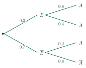
Theo sơ đồ hình cây, \(P(\overline B\mid A)=\)…
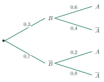
Answer: a. \(P(A)=0.32\); \(P(\overline B\mid A)=\dfrac{0.14}{0.32}=\dfrac{7}{16}\).
Đáp án a. \(P(A)=0{,}32\); \(P(\overline B\mid A)=\dfrac{0{,}14}{0{,}32}=\dfrac{7}{16}\).
B. True or FalseB. Đúng hoặc sai
\(P(A)=P(B)P(A\mid B)+P(\overline B)P(A\mid\overline B)\) for \(0\lt P(B)\lt1\).
\(P(A)=P(B)P(A\mid B)+P(\overline B)P(A\mid\overline B)\) với \(0\lt P(B)\lt1\).
Law of total probability.
Công thức xác suất toàn phần.
\(P(B\mid A)=P(B)P(A\mid B)\).
\(P(B\mid A)=P(B)P(A\mid B)\).
One must divide by \(P(A)\).
Phải chia cho \(P(A)\).
From the tree diagram: knowing that \(A\) occurred makes \(B\) more likely, i.e. \(P(B\mid A)\gt P(B)\).
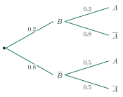
Theo sơ đồ hình cây: biết \(A\) đã xảy ra thì \(B\) dễ xảy ra hơn, tức là \(P(B\mid A)\gt P(B)\).
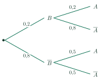
\(P(A)=0.44\), \(P(B\mid A)=\dfrac{0.04}{0.44}=\dfrac{1}{11}\), \(P(B)=0.2\).
\(P(A)=0{,}44\), \(P(B\mid A)=\dfrac{0{,}04}{0{,}44}=\dfrac{1}{11}\), \(P(B)=0{,}2\).
C. Short AnswerC. Trả lời ngắn
Machines make 50%, 30%, 20% of the products; defect rates 2%, 3%, 5%. Find \(P(\text{defective})\) as a percentage (e.g. 2.5 means 2.5%).
Ba máy sản xuất 50%, 30%, 20% sản phẩm; tỉ lệ phế phẩm 2%, 3%, 5%. Tính xác suất lấy được phế phẩm theo phần trăm (ví dụ 2,5 nghĩa là 2,5%).
Enter a number.
Nhập một số.
\(\sum P(B_i)P(A\mid B_i)=0.029=2.9\%\).
\(\sum P(B_i)P(A\mid B_i)=0{,}029=2{,}9\%\).
A student knows the answer to a 2-option question with probability 0.6, otherwise guesses. He answered correctly. Find the probability that he knew it (decimal).
Câu trắc nghiệm 2 phương án; học sinh biết đáp án với xác suất 0{,}6, nếu không thì chọn ngẫu nhiên. Em trả lời đúng. Tính xác suất em biết đáp án (dạng thập phân).
Enter a number.
Nhập một số.
\(\dfrac{0.6}{0.6+0.4\cdot\dfrac1{2}}=0.75\).
\(\dfrac{0{,}6}{0{,}6+0{,}4\cdot\dfrac1{2}}=0{,}75\).
In the tree diagram one branch is unknown. Given \(P(A)=0.48\), find \(P(A\mid\overline B)\) as a percentage.
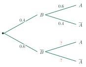
Trong sơ đồ hình cây có một nhánh chưa biết. Biết \(P(A)=0{,}48\), tìm \(P(A\mid\overline B)\) theo phần trăm.
Enter a number of percent, e.g. 15.
Nhập số phần trăm, ví dụ 15.
\(0.48=0.4\cdot0.6+0.6\cdot y\Rightarrow y=0.4\), i.e. 40%.
\(0{,}48=0{,}4\cdot0{,}6+0{,}6\cdot y\Rightarrow y=0{,}4\), tức 40%.
A. Multiple ChoiceA. Trắc nghiệm nhiều lựa chọn
\(P(B)=0.6\), \(P(A\mid B)=0.5\), \(P(A\mid\overline B)=0.3\). \(P(A)=\)…
Cho \(P(B)=0{,}6\), \(P(A\mid B)=0{,}5\), \(P(A\mid\overline B)=0{,}3\). Khi đó \(P(A)=\)…
Answer: b. Total probability.
Đáp án b. Xác suất toàn phần: \(0{,}6\cdot0{,}5+0{,}4\cdot0{,}3=0{,}42\).
\(P(B)=0.2\), \(P(A\mid B)=0.9\), \(P(A\mid\overline B)=0.3\). \(P(B\mid A)=\)…
Cho \(P(B)=0{,}2\), \(P(A\mid B)=0{,}9\), \(P(A\mid\overline B)=0{,}3\). Khi đó \(P(B\mid A)=\)…
Answer: c. Bayes: \(P(A)=0.42\).
Đáp án c. Bayes: \(P(A)=0{,}42\), \(P(B\mid A)=\dfrac{3}{7}\).
Box 1: 1 red, 3 white; box 2: 3 red, 2 white. Choose a box at random, then a ball. \(P(\text{red})=\)…
Hộp 1: 1 đỏ, 3 trắng; hộp 2: 3 đỏ, 2 trắng. Chọn ngẫu nhiên một hộp rồi lấy một bi. Xác suất được bi đỏ là…
Answer: a. \(\dfrac12\cdot\dfrac{1}{4}+\dfrac12\cdot\dfrac{3}{5}\).
Đáp án a. \(\dfrac12\cdot\dfrac{1}{4}+\dfrac12\cdot\dfrac{3}{5}=0{,}425\).
Three farms I, II, III supply 40%, 35%, 25% of the oranges of a market; 1%, 5%, 3% of their oranges are spoiled. A spoiled orange is found. The probability that it came from farm II is…
Ba trang trại I, II, III cung cấp 40%, 35%, 25% số cam của một chợ; tỉ lệ cam hỏng lần lượt 1%, 5%, 3%. Phát hiện một quả cam hỏng. Xác suất quả cam đó từ trang trại II là…
Answer: b. \(P(A)=2.9\%\); \(P(B_2\mid A)=\dfrac{35\cdot5}{290}=\dfrac{35}{58}\).
Đáp án b. \(P(A)=2{,}9\%\); \(P(B_2\mid A)=\dfrac{35\cdot5}{290}=\dfrac{35}{58}\).
Bag A holds 1 green and 5 yellow tickets; bag B holds 2 green and 5 yellow. A ticket is taken from A and put into B; then a ticket is drawn from B. The probability that it is green is…
Túi A có 1 phiếu xanh, 5 phiếu vàng; túi B có 2 phiếu xanh, 5 phiếu vàng. Lấy một phiếu từ A bỏ vào B rồi rút một phiếu từ B. Xác suất rút được phiếu xanh là…
Answer: b. \(\dfrac{1}{6}\cdot\dfrac{3}{8}+\dfrac{5}{6}\cdot\dfrac{2}{8}=\dfrac{13}{48}\).
Đáp án b. \(\dfrac{1}{6}\cdot\dfrac{3}{8}+\dfrac{5}{6}\cdot\dfrac{2}{8}=\dfrac{13}{48}\).
Given that \(A\) occurred, the probability that \(B\) did NOT occur (tree diagram) is…
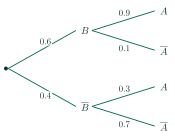
Biết \(A\) đã xảy ra, xác suất \(B\) KHÔNG xảy ra (sơ đồ hình cây) là…
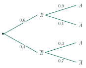
Answer: a. \(P(A)=0.66\); \(P(\overline B\mid A)=\dfrac{0.12}{0.66}=\dfrac{2}{11}\).
Đáp án a. \(P(A)=0{,}66\); \(P(\overline B\mid A)=\dfrac{0{,}12}{0{,}66}=\dfrac{2}{11}\).
B. True or FalseB. Đúng hoặc sai
If \(A\) and \(B\) are independent, then \(P(B\mid A)=P(B)\).
Nếu \(A\) và \(B\) độc lập thì \(P(B\mid A)=P(B)\).
Knowing \(A\) does not change the chance of \(B\).
Biết \(A\) không làm thay đổi khả năng xảy ra của \(B\).
\(P(B\mid A)+P(\overline B\mid A)=1\) only when \(A\), \(B\) are independent.
\(P(B\mid A)+P(\overline B\mid A)=1\) chỉ đúng khi \(A\), \(B\) độc lập.
It is always true (complementary events given \(A\)).
Luôn đúng (hai biến cố đối khi đã biết \(A\)).
In the tree diagram, \(P(B\mid A)\gt P(B)\) (\(A\) makes \(B\) more likely).
Trong sơ đồ hình cây, \(P(B\mid A)\gt P(B)\) (\(A\) làm \(B\) dễ xảy ra hơn).
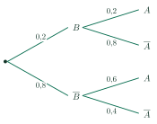
\(P(A)=0.52\), \(P(B\mid A)=\dfrac{0.04}{0.52}=\dfrac{1}{13}\), \(P(B)=0.2\).
\(P(A)=0{,}52\), \(P(B\mid A)=\dfrac{0{,}04}{0{,}52}=\dfrac{1}{13}\), \(P(B)=0{,}2\).
C. Short AnswerC. Trả lời ngắn
Machines make 40%, 35%, 25% of the products; defect rates 1%, 2%, 4%. Find \(P(\text{defective})\) as a percentage (e.g. 2.5 means 2.5%).
Ba máy sản xuất 40%, 35%, 25% sản phẩm; tỉ lệ phế phẩm 1%, 2%, 4%. Tính xác suất lấy được phế phẩm theo phần trăm (ví dụ 2,5 nghĩa là 2,5%).
Enter a number.
Nhập một số.
\(\sum P(B_i)P(A\mid B_i)=0.021=2.1\%\).
\(\sum P(B_i)P(A\mid B_i)=0{,}021=2{,}1\%\).
A student knows the answer to a 4-option question with probability 0.5, otherwise guesses. He answered correctly. Find the probability that he knew it (decimal).
Câu trắc nghiệm 4 phương án; học sinh biết đáp án với xác suất 0{,}5, nếu không thì chọn ngẫu nhiên. Em trả lời đúng. Tính xác suất em biết đáp án (dạng thập phân).
Enter a number.
Nhập một số.
\(\dfrac{0.5}{0.5+0.5\cdot\dfrac1{4}}=0.8\).
\(\dfrac{0{,}5}{0{,}5+0{,}5\cdot\dfrac1{4}}=0{,}8\).
The overall probability of \(A\) is \(0.42\). Find the missing branch \(P(A\mid\overline B)\) (in %).
Xác suất của \(A\) là \(0{,}42\). Tìm nhánh còn thiếu \(P(A\mid\overline B)\) (đơn vị %).
Enter a number of percent, e.g. 15.
Nhập số phần trăm, ví dụ 15.
\(0.42=0.4\cdot0.6+0.6\cdot y\Rightarrow y=0.3\), i.e. 30%.
\(0{,}42=0{,}4\cdot0{,}6+0{,}6\cdot y\Rightarrow y=0{,}3\), tức 30%.
A. Multiple ChoiceA. Trắc nghiệm nhiều lựa chọn
\(P(B)=0.2\), \(P(A\mid B)=0.9\), \(P(A\mid\overline B)=0.4\). \(P(A)=\)…
Cho \(P(B)=0{,}2\), \(P(A\mid B)=0{,}9\), \(P(A\mid\overline B)=0{,}4\). Khi đó \(P(A)=\)…
Answer: a. Total probability.
Đáp án a. Xác suất toàn phần: \(0{,}2\cdot0{,}9+0{,}8\cdot0{,}4=0{,}5\).
\(P(B)=0.5\), \(P(A\mid B)=0.8\), \(P(A\mid\overline B)=0.2\). \(P(B\mid A)=\)…
Cho \(P(B)=0{,}5\), \(P(A\mid B)=0{,}8\), \(P(A\mid\overline B)=0{,}2\). Khi đó \(P(B\mid A)=\)…
Answer: d. Bayes: \(P(A)=0.5\).
Đáp án d. Bayes: \(P(A)=0{,}5\), \(P(B\mid A)=0{,}8\).
Box 1: 2 red, 2 white; box 2: 1 red, 4 white. Choose a box at random, then a ball. \(P(\text{red})=\)…
Hộp 1: 2 đỏ, 2 trắng; hộp 2: 1 đỏ, 4 trắng. Chọn ngẫu nhiên một hộp rồi lấy một bi. Xác suất được bi đỏ là…
Answer: d. \(\dfrac12\cdot\dfrac{2}{4}+\dfrac12\cdot\dfrac{1}{5}\).
Đáp án d. \(\dfrac12\cdot\dfrac{2}{4}+\dfrac12\cdot\dfrac{1}{5}=0{,}35\).
Three bus lines I, II, III carry 30%, 30%, 40% of the students of a school; the late rates are 5%, 4%, 2%. A student arrives late. The probability that the student took line I is…
Ba tuyến xe buýt I, II, III chở 30%, 30%, 40% học sinh của trường; tỉ lệ đến muộn lần lượt 5%, 4%, 2%. Một học sinh đến muộn. Xác suất học sinh đó đi tuyến I là…
Answer: d. \(P(A)=3.5\%\); \(P(B_1\mid A)=\dfrac{30\cdot5}{350}=\dfrac{3}{7}\).
Đáp án d. \(P(A)=3{,}5\%\); \(P(B_1\mid A)=\dfrac{30\cdot5}{350}=\dfrac{3}{7}\).
Basket 1: 1 ripe and 4 unripe mangoes; basket 2: 5 ripe and 1 unripe. A mango is moved from basket 1 to basket 2, then one mango is taken from basket 2. Find the probability that it is ripe.
Rổ 1 có 1 quả xoài chín, 4 quả xanh; rổ 2 có 5 quả chín, 1 quả xanh. Chuyển một quả từ rổ 1 sang rổ 2 rồi lấy một quả từ rổ 2. Tính xác suất lấy được quả chín.
Answer: b. \(\dfrac{1}{5}\cdot\dfrac{6}{7}+\dfrac{4}{5}\cdot\dfrac{5}{7}=\dfrac{26}{35}\).
Đáp án b. \(\dfrac{1}{5}\cdot\dfrac{6}{7}+\dfrac{4}{5}\cdot\dfrac{5}{7}=\dfrac{26}{35}\).
Use the tree diagram to find \(P(\overline B\mid A)\).
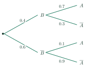
Dùng sơ đồ hình cây, tính \(P(\overline B\mid A)\).
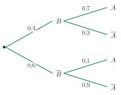
Answer: a. \(P(A)=0.34\); \(P(\overline B\mid A)=\dfrac{0.06}{0.34}=\dfrac{3}{17}\).
Đáp án a. \(P(A)=0{,}34\); \(P(\overline B\mid A)=\dfrac{0{,}06}{0{,}34}=\dfrac{3}{17}\).
B. True or FalseB. Đúng hoặc sai
With prevalence 1%, a test with 99% sensitivity gives \(P(\text{sick}\mid+)=0.99\).
Với tỉ lệ mắc 1%, xét nghiệm có độ nhạy 99% cho \(P(\text{bệnh}\mid+)=0{,}99\).
\(0.99\) is \(P(+\mid\text{sick})\); \(P(\text{sick}\mid+)\) is much smaller.
\(0{,}99\) là \(P(+\mid\text{bệnh})\); \(P(\text{bệnh}\mid+)\) nhỏ hơn nhiều.
The denominator of Bayes' formula is the total probability \(P(A)\).
Mẫu số của công thức Bayes là xác suất toàn phần \(P(A)\).
\(P(A)=\sum P(B_i)P(A\mid B_i)\).
\(P(A)=\sum P(B_i)P(A\mid B_i)\).
Using the tree diagram: \(P(B\mid A)\lt P(B)\).
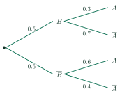
Dùng sơ đồ hình cây: \(P(B\mid A)\lt P(B)\).
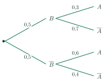
\(P(A)=0.45\), \(P(B\mid A)=\dfrac{0.15}{0.45}=\dfrac{1}{3}\), \(P(B)=0.5\).
\(P(A)=0{,}45\), \(P(B\mid A)=\dfrac{0{,}15}{0{,}45}=\dfrac{1}{3}\), \(P(B)=0{,}5\).
C. Short AnswerC. Trả lời ngắn
Machines make 60%, 25%, 15% of the products; defect rates 3%, 4%, 2%. Find \(P(\text{defective})\) as a percentage (e.g. 2.5 means 2.5%).
Ba máy sản xuất 60%, 25%, 15% sản phẩm; tỉ lệ phế phẩm 3%, 4%, 2%. Tính xác suất lấy được phế phẩm theo phần trăm (ví dụ 2,5 nghĩa là 2,5%).
Enter a number.
Nhập một số.
\(\sum P(B_i)P(A\mid B_i)=0.031=3.1\%\).
\(\sum P(B_i)P(A\mid B_i)=0{,}031=3{,}1\%\).
A student knows the answer to a 4-option question with probability 0.2, otherwise guesses. He answered correctly. Find the probability that he knew it (decimal).
Câu trắc nghiệm 4 phương án; học sinh biết đáp án với xác suất 0{,}2, nếu không thì chọn ngẫu nhiên. Em trả lời đúng. Tính xác suất em biết đáp án (dạng thập phân).
Enter a number.
Nhập một số.
\(\dfrac{0.2}{0.2+0.8\cdot\dfrac1{4}}=0.5\).
\(\dfrac{0{,}2}{0{,}2+0{,}8\cdot\dfrac1{4}}=0{,}5\).
Knowing \(P(A)=0.35\), calculate \(P(A\mid\overline B)\) and write it in percent.
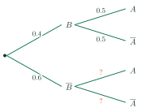
Biết \(P(A)=0{,}35\), tính \(P(A\mid\overline B)\) và viết dưới dạng phần trăm.
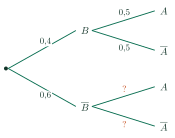
Enter a number of percent, e.g. 15.
Nhập số phần trăm, ví dụ 15.
\(0.35=0.4\cdot0.5+0.6\cdot y\Rightarrow y=0.25\), i.e. 25%.
\(0{,}35=0{,}4\cdot0{,}5+0{,}6\cdot y\Rightarrow y=0{,}25\), tức 25%.
D. Self-practice: Multiple ChoiceD. Tự luyện: trắc nghiệm
A disease affects 2% of people. A test is positive for 95% of sick and 4% of healthy people. A student computed the probability that a person with a positive test is sick. Step 1: \(P(+)=0.02\cdot0.95+0.98\cdot0.04=0.0582\). Step 2: \(P(\text{sick}\mid+)=P(+\mid\text{sick})=0.95\). Which comment is correct?
Một bệnh có tỉ lệ mắc 2%. Xét nghiệm dương tính với 95% người bệnh và 4% người khỏe. Một bạn tính xác suất người xét nghiệm dương tính bị bệnh. Bước 1: \(P(+)=0{,}02\cdot0{,}95+0{,}98\cdot0{,}04=0{,}0582\). Bước 2: \(P(\text{bệnh}\mid+)=P(+\mid\text{bệnh})=0{,}95\). Nhận xét nào đúng?
Answer: b. \(P(\text{sick}\mid+)=\dfrac{0.019}{0.0582}=\dfrac{95}{291}\), far from \(0.95\).
Đáp án b. \(P(\text{bệnh}\mid+)=\dfrac{0{,}019}{0{,}0582}=\dfrac{95}{291}\), khác xa \(0{,}95\).
A disease affects 2% of people. A test is positive for 80% of sick and 20% of healthy people; two tests on the same person are independent given the health status. A person tests positive twice. The probability that the person is sick is…
Một bệnh có tỉ lệ mắc 2%. Xét nghiệm dương tính với 80% người bệnh và 20% người khỏe; hai lần xét nghiệm trên cùng một người độc lập khi biết tình trạng bệnh. Một người dương tính cả hai lần. Xác suất người đó bị bệnh là…
Answer: d. \(P=\dfrac{0.02\cdot0.8^2}{0.02\cdot0.8^2+0.98\cdot0.2^2}=\dfrac{16}{65}\) (after one test only \(\dfrac{4}{53}\)).
Đáp án d. \(P=\dfrac{0{,}02\cdot0{,}8^2}{0{,}02\cdot0{,}8^2+0{,}98\cdot0{,}2^2}=\dfrac{16}{65}\) (sau một lần chỉ là \(\dfrac{4}{53}\)).
\(P(A\mid B)=0.6\), \(P(A\mid\overline B)=0.1\) and \(P(B\mid A)=0.8\). Then \(P(B)=\)…
\(P(A\mid B)=0{,}6\), \(P(A\mid\overline B)=0{,}1\) và \(P(B\mid A)=0{,}8\). Khi đó \(P(B)=\)…
Answer: a. Put \(p=P(B)\): \(\dfrac{0.6 p}{0.6 p+0.1(1-p)}=0.8\Rightarrow p=0.4\).
Đáp án a. Đặt \(p=P(B)\): \(\dfrac{0{,}6 p}{0{,}6 p+0{,}1(1-p)}=0{,}8\Rightarrow p=0{,}4\).
A disease affects 5% of people (\(B\): "the person has the disease"). Test X is positive for 95% of the cases with \(B\) and 10% of the cases without \(B\); test Y for 85% and 2%. A case tests positive. With which test is the result more trustworthy?
Một bệnh có tỉ lệ mắc 5% (\(B\): "người đó mắc bệnh"). Xét nghiệm X dương tính với 95% trường hợp có \(B\) và 10% trường hợp không có \(B\); xét nghiệm Y lần lượt 85% và 2%. Một trường hợp cho kết quả dương tính. Với xét nghiệm nào kết quả đáng tin hơn?
Answer: d. X: \(P(B\mid+)=\dfrac{1}{3}\approx0.33\); Y: \(\dfrac{85}{123}\approx0.69\).
Đáp án d. X: \(P(B\mid+)=\dfrac{1}{3}\approx0{,}33\); Y: \(\dfrac{85}{123}\approx0{,}69\).
A farm buys 70% of its rice seeds from supplier X and the rest from supplier Y. 80% of X seeds and 75% of Y seeds germinate. A seed does not germinate. The probability that it came from X (see the tree diagram) is…
Một hợp tác xã mua 70% hạt giống lúa của cơ sở X, còn lại của cơ sở Y. Tỉ lệ nảy mầm của hạt X là 80%, của hạt Y là 75%. Một hạt không nảy mầm. Xác suất hạt đó của cơ sở X (xem sơ đồ hình cây) là…
Answer: a. \(P(\overline G)=0.7\cdot0.2+0.3\cdot0.25=0.215\); \(P(X\mid\overline G)=\dfrac{0.14}{0.215}=\dfrac{28}{43}\).
Đáp án a. \(P(\overline G)=0{,}7\cdot0{,}2+0{,}3\cdot0{,}25=0{,}215\); \(P(X\mid\overline G)=\dfrac{0{,}14}{0{,}215}=\dfrac{28}{43}\).
In a town of 10000 people, 5% have a disease. A test is positive for 90% of sick and 5% of healthy people. If everyone is tested, about how many positive results are expected? (Tree diagram: \(B\) = sick, \(A\) = positive.)
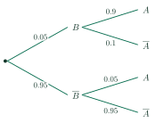
Một thị trấn có 10000 người, 5% mắc một bệnh. Xét nghiệm dương tính với 90% người bệnh và 5% người khỏe. Nếu xét nghiệm tất cả, có khoảng bao nhiêu kết quả dương tính? (Sơ đồ hình cây: \(B\) – bị bệnh, \(A\) – dương tính.)
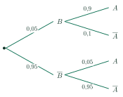
Answer: b. Sick and positive: \(10000\cdot0.05\cdot0.9=450\); healthy and positive: \(475\); total positive \(925\).
Đáp án b. Bệnh và dương tính: \(10000\cdot0{,}05\cdot0{,}9=450\); khỏe mà dương tính: \(475\); tổng số dương tính \(925\).
A die is rolled. Which family of events forms a complete system (exclusive and covering all outcomes)?
Gieo một con xúc xắc. Nhóm biến cố nào là một hệ đầy đủ (xung khắc từng đôi và phủ mọi kết quả)?
Answer: a. Only this family is pairwise exclusive and its events cover all cases.
Đáp án a. Chỉ nhóm này xung khắc từng đôi và các biến cố phủ hết mọi trường hợp.
A box is chosen, then one ball is drawn: box 1 (chosen with probability \(\dfrac{1}{3}\)) has 2 red and 3 white balls; box 2 (chosen with probability \(\dfrac{1}{3}\)) has 1 red and 1 white balls; box 3 (chosen with probability \(\dfrac{1}{3}\)) has 5 red and 1 white balls. The ball is red. From which box did it most probably come?
Chọn một hộp rồi lấy một bi: hộp 1 (được chọn với xác suất \(\dfrac{1}{3}\)) có 2 bi đỏ, 3 bi trắng; hộp 2 (được chọn với xác suất \(\dfrac{1}{3}\)) có 1 bi đỏ, 1 bi trắng; hộp 3 (được chọn với xác suất \(\dfrac{1}{3}\)) có 5 bi đỏ, 1 bi trắng. Bi lấy được màu đỏ. Bi đó nhiều khả năng nhất là của hộp nào?
Answer: c. Posterior probabilities: \(\dfrac{3}{13}\), \(\dfrac{15}{52}\), \(\dfrac{25}{52}\).
Đáp án c. Các xác suất hậu nghiệm: \(\dfrac{3}{13}\), \(\dfrac{15}{52}\), \(\dfrac{25}{52}\).
D. Self-practice: Multiple ChoiceD. Tự luyện: trắc nghiệm
A disease affects 2% of people. A test is positive for 98% of sick and 2% of healthy people. A student computed the probability that a person with a positive test is sick. Step 1: \(P(+)=0.02\cdot0.98+0.98\cdot0.02=0.0392\). Step 2: \(P(\text{sick}\mid+)=P(+\mid\text{sick})=0.98\). Which comment is correct?
Một bệnh có tỉ lệ mắc 2%. Xét nghiệm dương tính với 98% người bệnh và 2% người khỏe. Một bạn tính xác suất người xét nghiệm dương tính bị bệnh. Bước 1: \(P(+)=0{,}02\cdot0{,}98+0{,}98\cdot0{,}02=0{,}0392\). Bước 2: \(P(\text{bệnh}\mid+)=P(+\mid\text{bệnh})=0{,}98\). Nhận xét nào đúng?
Answer: d. \(P(\text{sick}\mid+)=\dfrac{0.0196}{0.0392}=\dfrac{1}{2}\), far from \(0.98\).
Đáp án d. \(P(\text{bệnh}\mid+)=\dfrac{0{,}0196}{0{,}0392}=\dfrac{1}{2}\), khác xa \(0{,}98\).
10% of the e-mails are spam. A filter flags 90% of spam and 20% of normal e-mails; two different filters of this kind work independently given the type of e-mail. Both flag an e-mail. The probability that it is spam is…
10% thư điện tử là thư rác. Một bộ lọc đánh dấu 90% thư rác và 20% thư thường; hai bộ lọc loại này hoạt động độc lập khi biết loại thư. Cả hai cùng đánh dấu một thư. Xác suất thư đó là thư rác là…
Answer: c. \(P=\dfrac{0.1\cdot0.9^2}{0.1\cdot0.9^2+0.9\cdot0.2^2}=\dfrac{9}{13}\) (after one test only \(\dfrac{1}{3}\)).
Đáp án c. \(P=\dfrac{0{,}1\cdot0{,}9^2}{0{,}1\cdot0{,}9^2+0{,}9\cdot0{,}2^2}=\dfrac{9}{13}\) (sau một lần chỉ là \(\dfrac{1}{3}\)).
Knowing \(P(B\mid A)=\dfrac{2}{3}\), \(P(A\mid B)=0.8\), \(P(A\mid\overline B)=0.1\), find the prior probability \(P(B)\).
Biết \(P(B\mid A)=\dfrac{2}{3}\), \(P(A\mid B)=0{,}8\), \(P(A\mid\overline B)=0{,}1\), tìm xác suất tiên nghiệm \(P(B)\).
Answer: b. Put \(p=P(B)\): \(\dfrac{0.8 p}{0.8 p+0.1(1-p)}=\dfrac{2}{3}\Rightarrow p=0.2\).
Đáp án b. Đặt \(p=P(B)\): \(\dfrac{0{,}8 p}{0{,}8 p+0{,}1(1-p)}=\dfrac{2}{3}\Rightarrow p=0{,}2\).
5% of the parts in a factory are faulty (\(B\): "the part is faulty"). Test X is positive for 95% of the cases with \(B\) and 5% of the cases without \(B\); test Y for 80% and 1%. A case tests positive. With which test is the result more trustworthy?
5% linh kiện của một nhà máy bị lỗi (\(B\): "linh kiện bị lỗi"). Xét nghiệm X dương tính với 95% trường hợp có \(B\) và 5% trường hợp không có \(B\); xét nghiệm Y lần lượt 80% và 1%. Một trường hợp cho kết quả dương tính. Với xét nghiệm nào kết quả đáng tin hơn?
Answer: a. X: \(P(B\mid+)=\dfrac{1}{2}\approx0.5\); Y: \(\dfrac{80}{99}\approx0.81\).
Đáp án a. X: \(P(B\mid+)=\dfrac{1}{2}\approx0{,}5\); Y: \(\dfrac{80}{99}\approx0{,}81\).
70% of the chicken eggs in an incubator come from farm X, the rest from farm Y. Hatching rates are 90% (X) and 75% (Y). An egg does not hatch. Using the tree diagram, find the probability that it came from X.
70% số trứng gà trong lò ấp của trại X, còn lại của trại Y. Tỉ lệ nở là 90% (X) và 75% (Y). Một quả trứng không nở. Dùng sơ đồ hình cây, tính xác suất quả trứng đó của trại X.
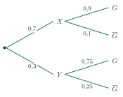
Answer: a. \(P(\overline G)=0.7\cdot0.1+0.3\cdot0.25=0.145\); \(P(X\mid\overline G)=\dfrac{0.07}{0.145}=\dfrac{14}{29}\).
Đáp án a. \(P(\overline G)=0{,}7\cdot0{,}1+0{,}3\cdot0{,}25=0{,}145\); \(P(X\mid\overline G)=\dfrac{0{,}07}{0{,}145}=\dfrac{14}{29}\).
A school screens 1000 students for a condition affecting 4% of them; the screening is positive for 95% of affected and 5% of unaffected students. About how many students will be screened positive? (Tree diagram: \(B\) = sick, \(A\) = positive.)
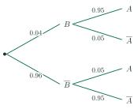
Một trường sàng lọc 1000 học sinh về một tình trạng có ở 4% học sinh; kết quả dương tính với 95% em có và 5% em không có tình trạng đó. Khoảng bao nhiêu học sinh có kết quả dương tính? (Sơ đồ hình cây: \(B\) – bị bệnh, \(A\) – dương tính.)
Answer: b. Sick and positive: \(1000\cdot0.04\cdot0.95=38\); healthy and positive: \(48\); total positive \(86\).
Đáp án b. Bệnh và dương tính: \(1000\cdot0{,}04\cdot0{,}95=38\); khỏe mà dương tính: \(48\); tổng số dương tính \(86\).
Which of the following is a complete system of events?
Nhóm biến cố nào sau đây là một hệ đầy đủ?
Answer: a. Only this family is pairwise exclusive and its events cover all cases.
Đáp án a. Chỉ nhóm này xung khắc từng đôi và các biến cố phủ hết mọi trường hợp.
Three boxes: box 1 (chosen with probability \(\dfrac{1}{2}\)) has 3 red and 3 white balls; box 2 (chosen with probability \(\dfrac{1}{3}\)) has 1 red and 3 white balls; box 3 (chosen with probability \(\dfrac{1}{6}\)) has 4 red and 2 white balls. A red ball was drawn. Which box is the most likely source?
Ba hộp: hộp 1 (được chọn với xác suất \(\dfrac{1}{2}\)) có 3 bi đỏ, 3 bi trắng; hộp 2 (được chọn với xác suất \(\dfrac{1}{3}\)) có 1 bi đỏ, 3 bi trắng; hộp 3 (được chọn với xác suất \(\dfrac{1}{6}\)) có 4 bi đỏ, 2 bi trắng. Lấy được một bi đỏ. Hộp nào có khả năng cao nhất?
Answer: c. Posterior probabilities: \(\dfrac{9}{16}\), \(\dfrac{3}{16}\), \(\dfrac{1}{4}\).
Đáp án c. Các xác suất hậu nghiệm: \(\dfrac{9}{16}\), \(\dfrac{3}{16}\), \(\dfrac{1}{4}\).
D. Self-practice: Multiple ChoiceD. Tự luyện: trắc nghiệm
A disease affects 5% of people. A test is positive for 95% of sick and 4% of healthy people. A student computed the probability that a person with a positive test is sick. Step 1: \(P(+)=0.05\cdot0.95+0.95\cdot0.04=0.0855\). Step 2: \(P(\text{sick}\mid+)=P(+\mid\text{sick})=0.95\). Which comment is correct?
Một bệnh có tỉ lệ mắc 5%. Xét nghiệm dương tính với 95% người bệnh và 4% người khỏe. Một bạn tính xác suất người xét nghiệm dương tính bị bệnh. Bước 1: \(P(+)=0{,}05\cdot0{,}95+0{,}95\cdot0{,}04=0{,}0855\). Bước 2: \(P(\text{bệnh}\mid+)=P(+\mid\text{bệnh})=0{,}95\). Nhận xét nào đúng?
Answer: c. \(P(\text{sick}\mid+)=\dfrac{0.0475}{0.0855}=\dfrac{5}{9}\), far from \(0.95\).
Đáp án c. \(P(\text{bệnh}\mid+)=\dfrac{0{,}0475}{0{,}0855}=\dfrac{5}{9}\), khác xa \(0{,}95\).
A machine is faulty with probability 10%. A sensor gives an alarm for 80% of faulty and 10% of good machines; two sensors work independently given the state. Both sensors alarm. The probability that the machine is faulty is…
Một máy bị lỗi với xác suất 10%. Một cảm biến báo động với 80% máy lỗi và 10% máy tốt; hai cảm biến hoạt động độc lập khi biết tình trạng máy. Cả hai cùng báo động. Xác suất máy bị lỗi là…
Answer: b. \(P=\dfrac{0.1\cdot0.8^2}{0.1\cdot0.8^2+0.9\cdot0.1^2}=\dfrac{64}{73}\) (after one test only \(\dfrac{8}{17}\)).
Đáp án b. \(P=\dfrac{0{,}1\cdot0{,}8^2}{0{,}1\cdot0{,}8^2+0{,}9\cdot0{,}1^2}=\dfrac{64}{73}\) (sau một lần chỉ là \(\dfrac{8}{17}\)).
Find \(P(B)\) if \(P(A\mid B)=0.6\), \(P(A\mid\overline B)=0.2\), \(P(B\mid A)=\dfrac{2}{3}\).
Tìm \(P(B)\) nếu \(P(A\mid B)=0{,}6\), \(P(A\mid\overline B)=0{,}2\), \(P(B\mid A)=\dfrac{2}{3}\).
Answer: d. Put \(p=P(B)\): \(\dfrac{0.6 p}{0.6 p+0.2(1-p)}=\dfrac{2}{3}\Rightarrow p=0.4\).
Đáp án d. Đặt \(p=P(B)\): \(\dfrac{0{,}6 p}{0{,}6 p+0{,}2(1-p)}=\dfrac{2}{3}\Rightarrow p=0{,}4\).
2% of the seeds in a batch are infected (\(B\): "the seed is infected"). Test X is positive for 95% of the cases with \(B\) and 5% of the cases without \(B\); test Y for 80% and 1%. A case tests positive. With which test is the result more trustworthy?
2% hạt giống trong một lô bị nhiễm bệnh (\(B\): "hạt bị nhiễm bệnh"). Xét nghiệm X dương tính với 95% trường hợp có \(B\) và 5% trường hợp không có \(B\); xét nghiệm Y lần lượt 80% và 1%. Một trường hợp cho kết quả dương tính. Với xét nghiệm nào kết quả đáng tin hơn?
Answer: d. X: \(P(B\mid+)=\dfrac{19}{68}\approx0.28\); Y: \(\dfrac{80}{129}\approx0.62\).
Đáp án d. X: \(P(B\mid+)=\dfrac{19}{68}\approx0{,}28\); Y: \(\dfrac{80}{129}\approx0{,}62\).
A garden plants 60% of its seedlings from nursery X and the rest from nursery Y. 85% of X and 60% of Y seedlings survive. A seedling dies. The probability that it came from X (see the tree diagram) is…
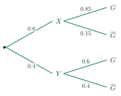
Một vườn trồng 60% cây giống của vườn ươm X, còn lại của vườn ươm Y. Tỉ lệ sống của cây X là 85%, cây Y là 60%. Một cây bị chết. Xác suất cây đó của vườn ươm X (xem sơ đồ hình cây) là…
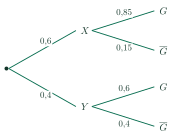
Answer: b. \(P(\overline G)=0.6\cdot0.15+0.4\cdot0.4=0.25\); \(P(X\mid\overline G)=\dfrac{0.09}{0.25}=\dfrac{9}{25}\).
Đáp án b. \(P(\overline G)=0{,}6\cdot0{,}15+0{,}4\cdot0{,}4=0{,}25\); \(P(X\mid\overline G)=\dfrac{0{,}09}{0{,}25}=\dfrac{9}{25}\).
Among 2000 people, 2% are sick; the test is positive for 95% of the sick and 5% of the healthy. About how many people are sick AND test positive? (Tree diagram: \(B\) = sick, \(A\) = positive.)
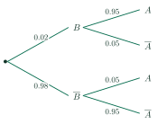
Trong 2000 người có 2% người bệnh; xét nghiệm dương tính với 95% người bệnh và 5% người khỏe. Có khoảng bao nhiêu người vừa bị bệnh vừa dương tính? (Sơ đồ hình cây: \(B\) – bị bệnh, \(A\) – dương tính.)
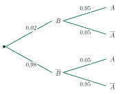
Answer: b. Sick and positive: \(2000\cdot0.02\cdot0.95=38\); healthy and positive: \(98\); total positive \(136\).
Đáp án b. Bệnh và dương tính: \(2000\cdot0{,}02\cdot0{,}95=38\); khỏe mà dương tính: \(98\); tổng số dương tính \(136\).
For the law of total probability we need a complete system. Which one is it?
Công thức xác suất toàn phần cần một hệ đầy đủ các biến cố. Đó là nhóm nào?
Answer: b. Only this family is pairwise exclusive and its events cover all cases.
Đáp án b. Chỉ nhóm này xung khắc từng đôi và các biến cố phủ hết mọi trường hợp.
Given that the ball drawn is red (box 1 (chosen with probability \(\dfrac{1}{5}\)) has 5 red and 2 white balls; box 2 (chosen with probability \(\dfrac{2}{5}\)) has 2 red and 2 white balls; box 3 (chosen with probability \(\dfrac{2}{5}\)) has 4 red and 5 white balls), the box with the largest posterior probability is…
Biết bi lấy được màu đỏ (hộp 1 (được chọn với xác suất \(\dfrac{1}{5}\)) có 5 bi đỏ, 2 bi trắng; hộp 2 (được chọn với xác suất \(\dfrac{2}{5}\)) có 2 bi đỏ, 2 bi trắng; hộp 3 (được chọn với xác suất \(\dfrac{2}{5}\)) có 4 bi đỏ, 5 bi trắng), hộp có xác suất hậu nghiệm lớn nhất là…
Answer: d. Posterior probabilities: \(\dfrac{45}{164}\), \(\dfrac{63}{164}\), \(\dfrac{14}{41}\).
Đáp án d. Các xác suất hậu nghiệm: \(\dfrac{45}{164}\), \(\dfrac{63}{164}\), \(\dfrac{14}{41}\).
8Common MistakesLỗi thường gặp
Adding the conditional probabilities. \(P(A)\ne P(A\mid B)+P(A\mid\overline B)\); each must be weighted by \(P(B)\), \(P(\overline B)\).
Cộng các xác suất có điều kiện. \(P(A)\ne P(A\mid B)+P(A\mid\overline B)\); mỗi số phải nhân với \(P(B)\), \(P(\overline B)\).
Forgetting the denominator in Bayes' formula. \(P(B)P(A\mid B)\) is \(P(A\cap B)\), not \(P(B\mid A)\).
Quên mẫu số trong công thức Bayes. \(P(B)P(A\mid B)\) là \(P(A\cap B)\), không phải \(P(B\mid A)\).
Confusing \(P(+\mid\text{sick})\) with \(P(\text{sick}\mid+)\).
Nhầm \(P(+\mid\text{bệnh})\) với \(P(\text{bệnh}\mid+)\).
Events that do not form a complete system. The \(B_i\) must be exclusive and cover all cases (their probabilities add to 1).
Các biến cố không tạo thành hệ đầy đủ. Các \(B_i\) phải xung khắc và phủ hết mọi trường hợp (tổng xác suất bằng 1).
9Lesson SummaryTổng kết
Total probability: \(P(A)=P(B)P(A\mid B)+P(\overline B)P(A\mid\overline B)\) (or \(\sum P(B_i)P(A\mid B_i)\)).
Xác suất toàn phần: \(P(A)=P(B)P(A\mid B)+P(\overline B)P(A\mid\overline B)\) (hoặc \(\sum P(B_i)P(A\mid B_i)\)).
Bayes: \(P(B\mid A)=\dfrac{P(B)P(A\mid B)}{P(A)}\).
Bayes: \(P(B\mid A)=\dfrac{P(B)P(A\mid B)}{P(A)}\).
Tree diagram: multiply along branches, add branches ending in \(A\).
Sơ đồ hình cây: nhân theo nhánh, cộng các nhánh dẫn tới \(A\).
Key words: total probability, Bayes' formula, complete system, prior, posterior.
Từ cần nhớ (chạm vào để xem tiếng Anh): xác suất toàn phần; công thức Bayes; hệ đầy đủ; xác suất tiên nghiệm; xác suất hậu nghiệm.